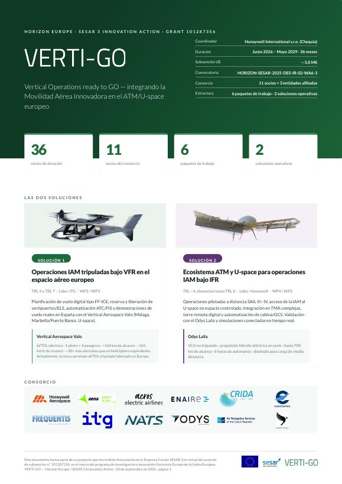

VERTI-GO: llevar la movilidad aérea innovadora del concepto a vuelos reales en Europa
Más allá de certificar nuevas aeronaves y construir vertipuertos, queda un reto clave: integrarlas con seguridad en el ATM y el U-space actuales.
Leer más
Ese es el reto que asume VERTI-GO (Vertical Operations ready to GO), una Acción de Innovación de Horizonte Europa / SESAR 3 de 36 meses (junio 2026 – mayo 2029), coordinada por Honeywell, con unos 5 millones de euros de financiación europea y 11 socios más 3 entidades afiliadas.
Solución 1 · Operaciones IAM tripuladas bajo VFR (TRL 4 → 7). Planificación de vuelo digital, reserva de vertipuertos y de lugares de aterrizaje de contingencia, y automatización ATC/FIS, que culminan en vuelos de demostración reales en España con el eVTOL Valo de Vertical Aerospace entre Málaga y Marbella (helipuerto de Puerto Banús).
Solución 2 · Ecosistema ATM y U-space para la IAM bajo IFR. Operaciones de carga pilotadas a distancia SAIL III–IV con el Odys Laila en el corredor Almería–Málaga, acceso al U-space en espacio aéreo controlado, el concepto de torre remota digital y la integración de la IAM en espacios aéreos terminales complejos, validada mediante simulaciones de la TMA de Londres.
Cinco resultados principales:
- Un marco de planificación de vuelo para la IAM (tipo FF-ICE).
- Un marco de reserva de vertipuertos y lugares de aterrizaje de contingencia.
- Procedimientos operativos para seis entornos, desde VFR no controlado hasta IFR en espacio aéreo controlado complejo.
- Servicios ATM/U-space para la IAM en espacio aéreo de baja altitud.
- Automatización avanzada de cabina y de estación de control en tierra.
Hoja de ruta: conceptos en 2026–27, simulaciones conectadas y ensayos SAIL IV en 2028, y vuelos de prueba del Valo en 2028–29.